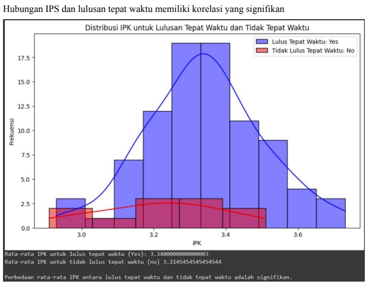

DATA PROCESSING DAN DATA CLEANING
Data processing adalah proses pengolahan data mentah menjadi informasi yang berguna sedangkan Data cleaning adalah proses untuk mengidentifikasi dan memperbaiki atau menghapus data yang kotor atau tidak akurat dari dataset.
1. Penanganan Nilai Hilang (Missing Value) : Setelah melakukan pencarian, ditemukan bahwa terdapat beberapa data yang memiliki nilai null pada kolom-kolom tertentu. Ini dapat mempengaruhi analisis, sehingga perlu dilakukan penanganan nilai hilang. Beberapa teknik yang dapat digunakan termasuk pengisian nilai hilang dengan rata-rata, median, atau mode dari kolom tersebut, atau penghapusan baris/kolom yang memiliki banyak nilai hilang.
2. Identifikasi dan Penghapusan Duplikat : Setelah dilakukan identifikasi, beberapa baris dalam dataset ternyata merupakan duplikat. Langkah selanjutnya adalah menghapus duplikat tersebut untuk memastikan analisis dilakukan pada data yang bersih. Ini penting untuk mencegah bias dalam hasil analisis yang disebabkan oleh pengulangan data yang sama.
3. Penanganan Nilai Ekstrem : Melalui analisis, teridentifikasi adanya nilai-nilai yang ekstrem dalam dataset. Nilai-nilai ini dapat mempengaruhi hasil analisis secara signifikan. Oleh karena itu, perlu dilakukan penanganan khusus terhadap nilai-nilai ekstrem ini. Teknik yang dapat digunakan termasuk transformasi data, penghapusan outlier, atau pengaturan batas atas dan bawah untuk data.
4. Penanganan Kesalahan Tipe atau Format : Terdapat beberapa kesalahan tipe atau ketidaksesuaian format dalam dataset yang perlu diidentifikasi dan diperbaiki. Hal ini penting untuk memastikan konsistensi data dan akurasi analisis. Misalnya, memastikan bahwa semua tanggal dalam format yang sama, atau semua angka diformat dengan konsistensi desimal yang benar.
5. Identifikasi Anomali atau Nilai Tidak Sesuai : Selama proses analisis, terdapat beberapa nilai yang tidak sesuai dengan aturan bisnis atau ilmu pengetahuan yang relevan. Penting untuk mengidentifikasi dan menangani anomali ini agar analisis dapat dilakukan dengan akurat. Ini dapat melibatkan validasi terhadap aturan-aturan tertentu dan koreksi data yang tidak sesuai.
6. Pembersihan dan Pemrosesan Data Teks : Terdapat juga data teks dalam dataset yang perlu dibersihkan dan diproses. Ini termasuk penghapusan karakter khusus, konversi teks ke format standar (misalnya, huruf kecil semua), penghapusan stop words, dan mungkin juga penerapan stemming atau lemmatization untuk menghasilkan representasi yang lebih bersih dan seragam dari data teks.
Contoh Link Collab : Link Google Colaboratory
DATA PREPARATION & VISUALIZATION
1. Data preparation atau persiapan data adalah langkah-langkah yang dilakukan untuk mempersiapkan data mentah sebelum digunakan dalam analisis dan pemodelan. Tujuannya adalah memastikan bahwa data yang akan digunakan adalah bersih, konsisten, dan dalam format yang sesuai untuk analisis atau pelatihan model pembelajaran mesin. Proses ini melibatkan berbagai tahapan, seperti pembersihan data, transformasi data, dan pengurangan dimensi.
Contoh kode untuk Data Preparation dalam Python menggunakan library pandas:

2. Data visualization atau visualisasi data adalah proses penyajian data dalam bentuk grafik atau gambar, sehingga informasi yang terdapat dalam data dapat lebih mudah dipahami dan dianalisis. Visualisasi data membantu dalam mengidentifikasi pola, tren, dan anomali dalam data, serta mempermudah komunikasi hasil analisis.
Contoh kode untuk Data Visualization dalam Python menggunakan library matplotlib:

PRE-PROCESSING
Pre-processing atau prapemrosesan adalah tahap awal dalam proses analisis data dan pembelajaran mesin (machine learning) yang bertujuan untuk mempersiapkan data mentah menjadi format yang sesuai untuk digunakan dalam model. Tahap ini sangat penting karena kualitas data yang digunakan akan sangat mempengaruhi kinerja dan akurasi model yang akan dibangun. Pre-processing mencakup berbagai teknik dan langkah-langkah untuk membersihkan, mengubah, dan menyusun data agar lebih mudah dianalisis.
Beberapa langkah umum dalam pre-processing meliputi:
Pembersihan Data (Data Cleaning):
- Mengatasi Missing Values: Mengisi atau menghapus data yang hilang.
- Menghilangkan Duplikasi: Menghapus data yang duplikat atau redundan.
- Mengoreksi Kesalahan: Memperbaiki kesalahan dalam data, seperti kesalahan pengetikan atau inkonsistensi format.

Data Collection
Data collection adalah proses pengumpulan data dari berbagai sumber yang relevan dengan tujuan analisis. Contoh kode untuk data collection mungkin termasuk:

Transformasi Data (Data Transformation):
Data transformation melibatkan pengubahan format atau struktur data untuk mempersiapkannya untuk analisis lebih lanjut
- Normalisasi dan Standardisasi: Mengubah skala data agar semua fitur memiliki skala yang sama, biasanya diperlukan untuk algoritma yang sensitif terhadap skala data.
- Encoding Kategori: Mengubah data kategori menjadi format numerik menggunakan teknik seperti one-hot encoding atau label encoding.
- Penskalaan (Scaling): Mengubah rentang nilai fitur agar sesuai dengan rentang tertentu, seperti antara 0 dan 1.

Data Reduction
Data reduction adalah proses mengurangi jumlah atribut atau instance data tanpa menghilangkan informasi penting.
- PCA (Principal Component Analysis): Teknik untuk mengurangi jumlah fitur dengan memproyeksikan data ke dimensi yang lebih rendah sambil mempertahankan variabilitas maksimum.
- LDA (Linear Discriminant Analysis): Teknik yang mengurangi dimensi data berdasarkan variabel target untuk meningkatkan separabilitas antar kelas.

Dengan implementasi kode tersebut, data dapat diproses melalui serangkaian langkah pre-processing yang mencakup cleaning, collection, transformation, dan reduction sehingga siap untuk analisis lebih lanjut.
Link Video Diskusi : Link Diskusi YT
SUPERVISED LEARNING (PREDIKSI) 30 ALGORITMA
1. Pengertian Supervised Learning:
Supervised Learning adalah salah satu metode dalam pembelajaran mesin (machine learning) di mana model dilatih menggunakan data yang sudah diberi label. Data berlabel berarti setiap data input memiliki output yang diketahui dan telah ditentukan sebelumnya. Proses pelatihan ini melibatkan pemetaan input ke output yang benar, dengan tujuan agar model dapat melakukan prediksi yang akurat pada data baru yang belum pernah dilihat sebelumnya.
Dalam supervised learning, model dibimbing (supervised) dengan contoh-contoh dari data berlabel, sehingga dapat belajar dari pola-pola yang ada untuk kemudian digunakan dalam memprediksi atau mengklasifikasikan data yang tidak dikenal. Terdapat dua jenis utama tugas dalam supervised learning, yaitu:
- Klasifikasi : Di mana output yang diprediksi adalah kategori atau kelas (contohnya, deteksi email spam, diagnosis penyakit).
- Regres i: Di mana output yang diprediksi adalah nilai kontinu (contohnya, prediksi harga rumah, prediksi nilai saham).
2. Proses Supervised Learning:
- Pengumpulan Data : Mengumpulkan data yang sudah diberi label.
- Pembagian Data : Memisahkan data menjadi set pelatihan dan set pengujian.
- Pelatihan Model : Melatih model dengan set pelatihan.
- Evaluasi Model : Menguji kinerja model menggunakan set pengujian.
- Prediksi : Menggunakan model yang sudah terlatih untuk membuat prediksi pada data baru.
3. Algoritma Supervised Learning:
Berikut adalah 30 algoritma prediksi yang umum digunakan dalam Supervised Learning:
- Linear Regression
- Logistic Regression
- Decision Tree
- Random Forest
- Support Vector Machine (SVM)
- K-Nearest Neighbors (KNN)
- Naive Bayes
- Gradient Boosting Machines (GBM)
- AdaBoost
- XGBoost
- LightGBM
- CatBoost
- Ridge Regression
- Lasso Regression
- Elastic Net
- Polynomial Regression
- Bayesian Linear Regression
- Multi-layer Perceptron (MLP)
- Convolutional Neural Network (CNN)
- Recurrent Neural Network (RNN)
- Long Short-Term Memory (LSTM)
- Extreme Gradient Boosting (XGBoost)
- Stochastic Gradient Descent (SGD)
- Perceptron
- Quadratic Discriminant Analysis (QDA)
- Linear Discriminant Analysis (LDA)
- Bagging
- Voting Classifier
- Stacking
- Extra Trees
DATA TRANSKIP NILAI DAN DATA LULUSAN DARI UNIVERSITAS MELALUI API
Contoh Link Collab : Link Google Colaboratory
Contoh Link Collab : Link PDF
Pendahuluan
Dalam laporan ini, kami akan menganalisis data transkrip nilai mahasiswa untuk mengeksplorasi beberapa aspek yang relevan dengan keberhasilan akademik mereka. Fokus utama analisis meliputi Indeks Prestasi Semester (IPS) per semester per mahasiswa, hubungan antara IPS dan lulusan tepat waktu, keterkaitan antara predikat kelulusan 'Pujian' dengan lulusan tepat waktu, hubungan antara durasi studi dan predikat kelulusan, serta perbandingan prestasi akademik berdasarkan jenis kelamin. Dengan menggali data ini, kami bertujuan untuk mendapatkan wawasan yang lebih mendalam tentang faktor-faktor yang memengaruhi keberhasilan akademik mahasiswa terutama dalam konteks lulus tepat waktu.
Integrasi Data
Mengambil data transkrip nilai dari API dan mengonversinya menjadi DataFrame Pandas, kemudian menampilkan beberapa informasi tentang data tersebut. Untuk melanjutkan ke tahap pembersihan data, menambahkan kode untuk melakukan pembersihan seperti mengidentifikasi dan mengatasi nilai yang hilang atau tidak konsisten, serta menangani data mahasiswa pindahan.
IPS per Semester per Mahasiswa
Menghitung IPS per semester per mahasiswa dengan menjumlahkan nilai mata kuliah pada setiap semester dan membaginya dengan jumlah SKS yang diambil, memberikan gambaran kinerja akademik mahasiswa dari waktu ke waktu.
Dengan Metode :
- Mengelompokkan data berdasarkan Nomor Induk Mahasiswa (NIM), semester, dan Nama Mata Kuliah
- Menghitung nilai total untuk setiap semester berdasarkan data nilai total mata kuliah.
- Menghitung jumlah SKS yang diambil untuk setiap semester.


Hubungan antara IPS dan Lulusan Tepat Waktu
untuk mengevaluasi apakah terdapat hubungan antara Indeks Prestasi Semester (IPS) atau nilai rata-rata mata kuliah dengan kelulusan tepat waktu. Setelah melakukan analisis, kami menemukan bahwa tidak terdapat korelasi yang signifikan antara IPS atau nilai rata-rata mata kuliah dengan lulusan tepat waktu. Hal ini menunjukkan bahwa dari data yang telah dianalisis, tidak ada bukti yang mendukung adanya hubungan yang kuat antara IPS atau nilai rata-rata mata kuliah dengan kemungkinan seseorang lulus tepat waktu.
Korelasi antara Predikat Kelulusan 'Pujian' dengan Lulusan Tepat Waktu
Melalui analisis statistik, kami menemukan bahwa sebagian besar mahasiswa yang memperoleh predikat 'Pujian' lulus tepat waktu, sementara sebagian kecil dari mereka yang tidak memperoleh predikat 'Pujian' yang berhasil lulus tepat waktu.
Analisis menunjukkan bahwa terdapat korelasi negatif yang signifikan antara durasi studi dan predikat kelulusan. Mahasiswa dengan durasi studi yang lebih pendek cenderung mendapatkan predikat kelulusan yang lebih baik.

Perbandingan Prestasi Akademik Berdasarkan Jenis Kelamin
Rata-rata nilai total menunjukkan bahwa perempuan cenderung memiliki prestasi akademik yang sedikit lebih tinggi daripada laki-laki.

Kriteria Penilaian
Dalam analisis ini, kami mempertimbangkan beberapa kriteria sebagai berikut:
- Kapasitas untuk menyelenggarakan dan menyucikan data. Kami membersihkan data dari informasi yang tidak lengkap dan menggabungkannya dengan sumber data lainnya untuk analisis yang komprehensif.
- Efektivitas dalam menerapkan metode analisis statistik. Kami memanfaatkan beragam teknik statistik untuk mendapatkan pemahaman mendalam dari data.
- Kemampuan analisis dalam mengidentifikasi pola dan tren yang penting. Melalui analisis, kami mencari pola dan tren yang signifikan untuk memperoleh wawasan yang dalam.
- Kedalaman analisis dan kreativitas dalam eksplorasi data. Analisis kami menyelami berbagai aspek data dan mencoba untuk mengungkap wawasan baru.
- Kesempurnaan dan kejelasan laporan akhir, termasuk penggunaan visualisasi data
Kesimpulan
Berdasarkan analisis yang dilakukan, dapat disimpulkan bahwa terdapat
beberapa faktor yang mempengaruhi kinerja akademik mahasiswa, termasuk nilai IPS
atau IPK dari mahasiswa, Predikat kelulusan, durasi studi, dan jenis kelamin.
Sekian laporan analisis data transkrip nilai mahasiswa dan data mahasiswa lulus
ini disusun. Semoga laporan ini dapat memberikan wawasan berguna dalam
pemahaman tentang hal yang mempengaruhi kinerja akademik mahasiswa.
DATA MINING
Penggunaan data mining telah menjadi kunci penting dalam menganalisis data besar untuk mendapatkan wawasan. Beberapa metodologi dalam proses data mining, termasuk CRISP-DM, SEMMA, dan CCC. Memahami langkah-langkahnya, dan melihat bagaimana memainkan peran penting dalam mendapatkan pemahaman yang mendalam dari data. Proses ini meliputi identifikasi tujuan bisnis, pemahaman data, persiapan data, pemodelan, evaluasi, dan penerapan.
1. Data Mining
Proses data mining adalah serangkaian langkah atau tahapan yang dilakukan untuk mengekstrak informasi yang berharga atau pola yang tersembunyi dari sekumpulan data. Berikut adalah tahapan-tahapan umum dalam proses data mining:
- Pemahaman Bisnis: Identifikasi tujuan bisnis dan kebutuhan informasi.
- Pemahaman Data: Kumpulkan, pahami, dan eksplorasi data.
- Persiapan Data: Bersihkan, transformasikan, dan bagi data.
- Pemilihan Model: Pilih teknik atau model yang sesuai.
- Pembangunan Model: Terapkan dan latih model pada data.
- Evaluasi Model: Evaluasi kinerja model dan sesuaikan jika perlu.
- Penyajian Informasi: Sajikan hasil secara visual dan diskusikan implikasi bisnis.
- Implementasi: Terapkan hasil data mining dalam lingkungan bisnis.
- Pemeliharaan: Pantau kinerja model dan perbarui jika diperlukan.
2. CRISP-DM (Cross-Industry Standard Process for Data Mining)
CRISP-DM adalah kerangka kerja yang terstruktur untuk menggambarkan serangkaian langkah-langkah dalam melakukan proyek data mining. Terdiri dari enam tahapan utama: Pemahaman Bisnis, Pemahaman Data, Persiapan Data, Pemodelan, Evaluasi, dan Penerapan. Metodologi ini fleksibel dan dapat disesuaikan dengan kebutuhan proyek data mining.
3. SEMMA (Sample, Explore, Modify, Model, Assess)
SEMMA adalah pendekatan metodologi dalam analisis data yang dikembangkan oleh SAS Institute. Ini merupakan singkatan dari Sample, Explore, Modify, Model, dan Assess, yang masing-masing tahapannya memiliki peran penting dalam proses analisis data. Berikut adalah penjelasan singkat tentang setiap tahapan SEMMA:
- Sample: Memilih sampel data yang representatif.
- Explore: Eksplorasi data untuk memahami karakteristiknya.
- Modify: Merubah data jika diperlukan, seperti transformasi atau pengkodean.
- Model: Membangun model untuk menganalisis data.
- Assess: Mengevaluasi dan menguji model untuk memastikan kinerjanya yang baik.
4. CCC (Computation, Cognitive, and Communication):
CCC (Computation, Cognitive, and Communication) adalah pendekatan yang dikembangkan oleh Gregory Piatetsky-Shapiro dalam konteks proses data mining. Pendekatan ini menekankan tiga aspek utama yang diperlukan dalam penggunaan data mining secara efektif. Berikut adalah penjelasan untuk setiap elemen CCC:
- Computation: Penggunaan algoritma dan teknik komputasi untuk mengekstrak pola dari data.
- Cognitive: Pemahaman konsep-konsep dan interpretasi hasil data mining.
- Communication: Komunikasi hasil dan temuan kepada pemangku kepentingan yang relevan.
Dalam kesimpulan, proses data mining merupakan serangkaian langkah yang sistematis dan penting dalam menggali wawasan berharga dari data. Dari pemahaman bisnis hingga implementasi dan pemeliharaan, setiap tahapan memiliki peran krusial dalam memastikan keberhasilan proses ini. Dengan memahami dan mengikuti langkah-langkah dengan cermat, dapat memanfaatkan data mereka secara efektif untuk mengambil keputusan yang lebih baik dan memperoleh keunggulan kompetitif dalam lingkungan bisnis yang semakin kompleks. Oleh karena itu, penting untuk mengintegrasikan proses data mining ke dalam strategi secara keseluruhan untuk mencapai tujuan dan mendukung pertumbuhan jangka panjang